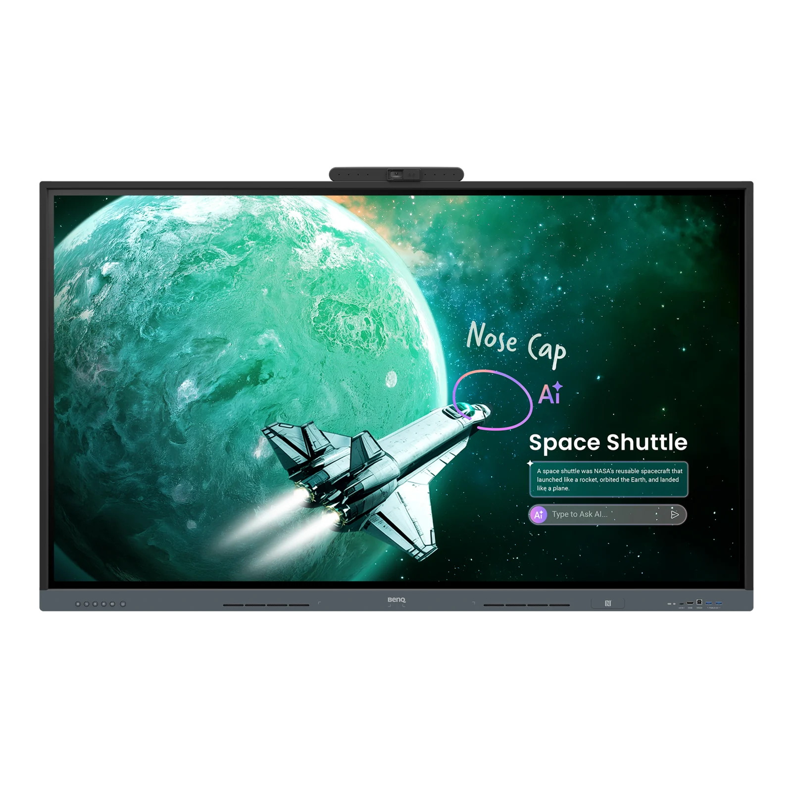
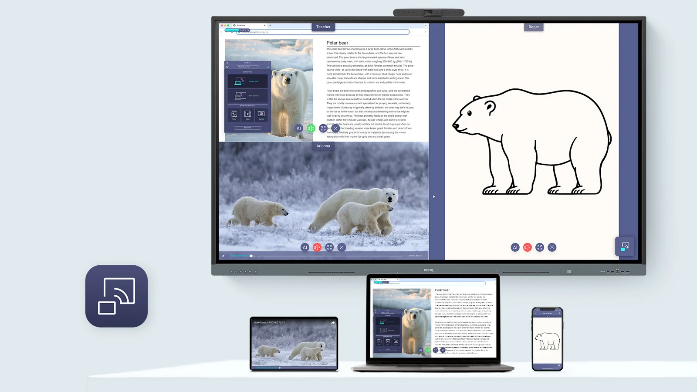
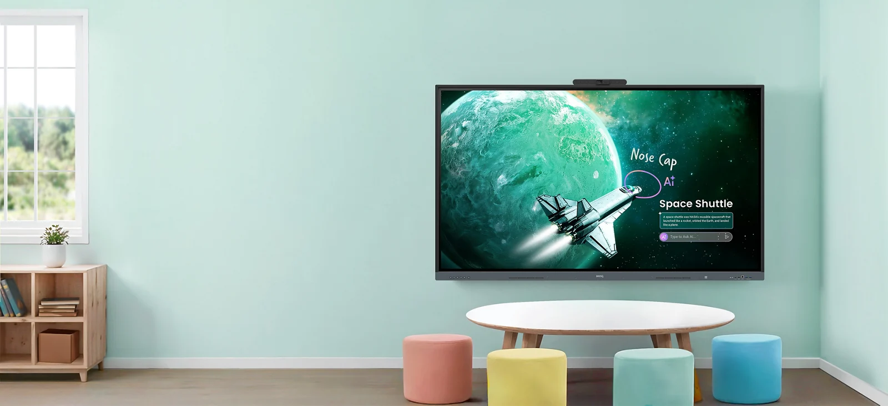

研究模型批註
展示研究架構、假設與變項關係，現場標記需要修正的部分。
BenQ RE05AC 教育互動觸控顯示器
讓研究構想、圖表比較與跨校協作，在同一個畫面展開。

從研究設計到成果報告，
讓團隊共同檢視資料、模型與進度。
顯示研究問題、變項關係與研究流程，利用白板批註共同釐清研究設計。
研究流程示例：展示研究架構 → 批註假設與變項 → 整理討論紀錄BenQ 設備應用情境示意，圖片原為教學場景 · 點選研究情境探索
檢視研究架構、訪談綱要或分析圖表時，
直接標記疑問、修正方向與下一步。

展示研究架構、假設與變項關係，現場標記需要修正的部分。
搭配網頁與白板分割畫面，比較研究圖表、文件與討論意見。
依軟體提供的匯出方式保存白板內容，再由研究團隊整理正式會議紀錄。
使用滑鼠拖曳或觸控書寫；行動裝置可從白板外側繼續捲動。
內建 AI 運算硬體
搭配 BenQ 內建工具
圈選白板上的研究概念，查找延伸資訊，再由研究人員回到可靠文獻核對。
研究小組討論抽樣或信效度時，圈選術語查找說明，再核對原始來源。
AI 工具原以教學應用為設計方向，此處僅展示研究團隊討論與訓練情境，不代表具備研究資料分析或文獻審查功能。AI 產出須由研究人員核對，未公開資料依學校資訊安全及研究倫理規範處理。功能與授權依實際版本。
透過合適的視訊平台連結共同主持人與研究夥伴。
會議時分享研究資料、提出修正意見並確認後續工作。
內建視訊攝影機
官方標示最遠 12 公尺收音
2 × 12 W 喇叭＋2 × 30 W 重低音
遠距會議需搭配合適視訊平台與網路；外接設備、影像、收音與回音效果須現場測試。
研究團隊多人使用同一台顯示器時，
依校方帳戶政策登入並在會後登出。

可依校方核准方式安裝研究會議所需應用程式。使用 NFC 感應登入前，須確認帳戶政策與權限設定；涉敏感資料應另依研究倫理及資安要求控管。
查看設備狀態與使用資訊，管理應用程式，設定電源排程。
同步學校目錄服務，集中管理登入權限與使用者。
導入前先確認校方帳戶政策、研究資料存取限制及網路連線方式。
防眩光設計降低反射干擾，搭配低藍光與不閃屏功能。選址時確認窗光、照明、閱讀距離與座位視線，設定合適亮度。
依研究室、實驗室或會議室的觀看距離，
確認字級、安裝位置、承重與支架條件。
尺寸比例示意 · 實際安裝依現場條件確認
| 項目 | 65 吋 | 75 吋 | 86 吋 |
|---|---|---|---|
| 型號 | RE6505AC | RE7505AC | RE8605AC |
| 整機寬度 | 1491.1 mm | 1711.3 mm | 1960.2 mm |
| 產品重量 | 29 kg | 39.9 kg | 56.5 kg |
| VESA 壁掛孔距 | 600 × 400 mm | 800 × 400 mm | 800 × 600 mm |
| 2026.10 簡報歷史價格（含稅） | NT$ 135,000 | NT$ 179,000 | NT$ 255,000 |
規格來源：BenQ 台灣 RE05AC 官方規格 ↗。售價取自使用者提供的 2026.10 推廣簡報。
先說明研究任務與既有設備限制，再提出適合的規格、使用方式與採購評估。
列出計畫中需共同檢視的研究圖表、模型、研究資料與開會頻率。
說明原有顯示器、投影設備或研究室設備是否足以完成計畫任務。
以實際圖表測試觸控批註、畫面分享、網路、資安及跨校會議相容性。
確認設備規格、正式報價、安裝及維護責任，依校方程序申請採購。
依國科會 2026 年 4 月 10 日修正的《補助專題研究計畫作業要點》，研究設備費須與計畫直接相關，並符合單價新臺幣 1 萬元以上及使用年限 2 年以上等條件。設備是否核准、可編列金額及採購方式，仍由個別計畫審查與執行機構依規定確認。
計畫任務、需要共同檢視的資料、既有設備限制、預計使用地點與頻率、選用規格理由及設備維護安排。
確認設備是否列於經費核定清單。原未核給的設備費或用途異動，依國科會經費處理原則及校內程序辦理，不能直接視為可以採購。
「本研究計畫預計於〔研究場域〕進行〔具體研究任務〕，研究團隊需共同檢視〔研究模型／資料圖表〕，並於〔會議或分析流程〕進行批註與討論。經盤點現有設備，尚有〔具體不足〕，因此擬評估使用互動觸控顯示器支援上述工作。設備規格、使用頻率及必要性，將依計畫內容與校內採購程序提出佐證。」
這段文字是撰寫輔助範本，請填入真實研究內容與既有設備情況；單純提升一般教室教學品質不足以證明與研究計畫直接相關。相關規定請見國科會經費處理原則 ↗。